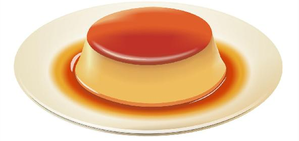

Egg Pudding

Fullfill your desire with a dessert
puddings are nearly always sweet desserts of milk or fruit juice variously flavoured and thickened with cornstarch, arrowroot, flour, tapioca, rice, bread, or eggs.
Ingredients
- Eggs
- Milk
- Sugar
- Vanilla extract
Steps
- Preheat your oven to 350°F (180°C) and prepare a baking dish or individual ramekins by greasing them lightly with butter or cooking spray.
- In a mixing bowl, crack the eggs and beat them until they are well combined.
- Add sugar to the beaten eggs and whisk again until the sugar is dissolved and the mixture becomes smooth.
- Pour in the milk and vanilla extract. Whisk everything together until all the ingredients are thoroughly combined.
- Strain the mixture through a fine-mesh sieve into another bowl or directly into a pouring jug. This step helps remove any lumps and ensures a smoother pudding texture.
- Pour the strained mixture into the greased baking dish or ramekins. If using a single baking dish, make sure it is large enough to hold the entire mixture. If using ramekins, distribute the mixture evenly among them.
- Optional: Sprinkle a pinch of cinnamon powder or nutmeg on top of the pudding mixture for added flavor.
- Place the baking dish or ramekins in a larger baking pan or tray. Carefully pour hot water into the larger pan, creating a water bath (also known as a bain-marie) around the pudding dish(es). The water level should reach about halfway up the sides of the dish(es).
- Carefully transfer the baking pan with the pudding mixture and water bath into the preheated oven.
- Bake the pudding for about 45-50 minutes or until it is set. You can check the doneness by inserting a toothpick or knife into the center of the pudding; if it comes out clean, the pudding is ready.
- Once baked, remove the pudding from the oven and let it cool to room temperature. Then, transfer it to the refrigerator and chill for at least a couple of hours or until it is fully set and firm.
- Serve the egg pudding chilled, either directly from the baking dish or by gently inverting it onto a serving plate. You can garnish it with a sprinkle of cinnamon powder or additional toppings like whipped cream, fresh fruits, or chopped nuts, if desired.